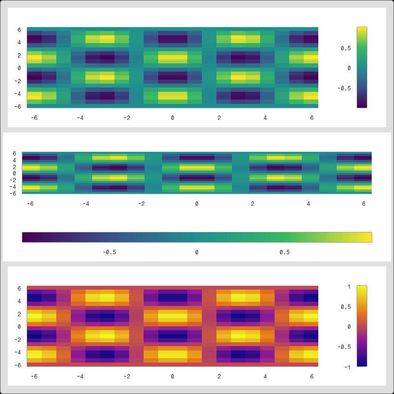
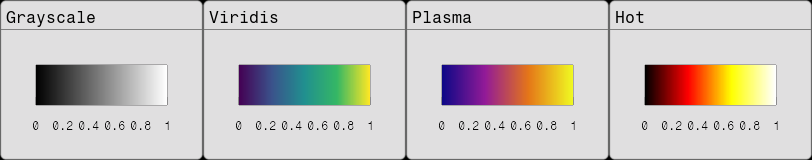
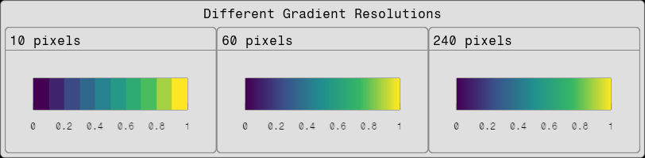

Colorbar
Colorbars provide a visual representation of the mapping between data values and colors in heatmaps and other color-coded visualizations. Fugl.jl supports both vertical (VerticalColorbar) and horizontal (HorizontalColorbar) colorbars.
The colorbar is a PlotElement, and is therefore drawn using the Plot function. The size and layout is managed like with any other Fugl component.
Basic Colorbar Example
using Fugl
function colorbar_demo()
# Create sample data for heatmap
x_range = range(-2π, 2π, length=20)
y_range = range(-2π, 2π, length=20)
x_data = Float32.(collect(x_range))
y_data = Float32.(collect(y_range))
# Create 2D function data
z_data = Float32.([sin(x) * cos(y) for y in y_range, x in x_range])
# Create main heatmap
heatmap = HeatmapElement(z_data, x_range=(x_data[1], x_data[end]), y_range=(y_data[1], y_data[end]), colormap=:viridis)
main_plot = Fugl.Plot([heatmap])
# Create vertical colorbar for the heatmap
vertical_colorbar = VerticalColorbar(heatmap)
# Create horizontal colorbar for the heatmap
horizontal_colorbar = HorizontalColorbar(heatmap)
# Create UI layout examples
ui = Container(
Column([
# Example 1: Plot with vertical colorbar on the right
IntrinsicRow([
main_plot,
FixedWidth(Plot([vertical_colorbar], PlotStyle(
show_left_axis=true,
show_right_axis=true,
show_top_axis=true,
show_bottom_axis=true,
show_x_ticks=false,
show_y_ticks=true
)), 100.0f0)
], spacing=0.0
),
# Example 2: Plot with horizontal colorbar at bottom
IntrinsicColumn([
main_plot,
FixedHeight(Plot([horizontal_colorbar], PlotStyle(
show_left_axis=true,
show_right_axis=true,
show_top_axis=true,
show_bottom_axis=true,
show_x_ticks=true,
show_y_ticks=false
)), 100.0f0)
], spacing=0.0
),
# Example 3: Different colormap with custom styling
IntrinsicRow([
Plot([HeatmapElement(z_data, x_range=(x_data[1], x_data[end]), y_range=(y_data[1], y_data[end]), colormap=:plasma)]),
FixedWidth(Plot([VerticalColorbar(:plasma, (-1.0f0, 1.0f0))], PlotStyle(
show_left_axis=true,
show_right_axis=true,
show_top_axis=true,
show_bottom_axis=true,
show_x_ticks=false,
show_y_ticks=true
)), 100.0f0)
], spacing=0.0
),
], spacing=0.0, padding=0.0)
)
return ui
end
screenshot(colorbar_demo, "colorbar_multiple.png", 812, 812);
Different Colormap Types
This example shows all four available colormaps with the same data range:
using Fugl
using Fugl: Text
function colormap_types_demo()
# Create colorbars with different colormaps
grayscale_bar = HorizontalColorbar(:grayscale, (0.0f0, 1.0f0))
viridis_bar = HorizontalColorbar(:viridis, (0.0f0, 1.0f0))
plasma_bar = HorizontalColorbar(:plasma, (0.0f0, 1.0f0))
hot_bar = HorizontalColorbar(:hot, (0.0f0, 1.0f0))
# Colorbar sizing, style and layout
MyColorBar(plot_element) = FixedHeight(Plot([plot_element], PlotStyle(
background_color=Vec4(0.0f0, 0.0f0, 0.0f0, 0.0f0),
show_left_axis=true,
show_right_axis=true,
show_top_axis=true,
show_bottom_axis=true,
show_x_ticks=true,
show_y_ticks=false,
padding=30.0f0
)), 100.0f0)
ui =
IntrinsicRow([
Card(
"Grayscale",
MyColorBar(grayscale_bar)
),
Card(
"Viridis",
MyColorBar(viridis_bar)
),
Card(
"Plasma",
MyColorBar(plasma_bar)
),
Card(
"Hot",
MyColorBar(hot_bar)
)
], spacing=0.0, padding=0.0)
return ui
end
screenshot(colormap_types_demo, "colorbar_types.png", 812, 160);
Different Gradient Resolutions
This example shows the effect of different gradient_pixels values on the smoothness of the colorbar gradient:
using Fugl
using Fugl: Text
function gradient_resolution_demo()
# Create colorbars with different gradient resolutions
low_res_bar = HorizontalColorbar(:viridis, (0.0f0, 1.0f0), gradient_pixels=10)
medium_res_bar = HorizontalColorbar(:viridis, (0.0f0, 1.0f0), gradient_pixels=60)
high_res_bar = HorizontalColorbar(:viridis, (0.0f0, 1.0f0), gradient_pixels=240)
# Colorbar sizing, style and layout
MyColorBar(plot_element) = FixedHeight(Plot([plot_element], PlotStyle(
background_color=Vec4(0.0f0, 0.0f0, 0.0f0, 0.0f0),
show_left_axis=true,
show_right_axis=true,
show_top_axis=true,
show_bottom_axis=true,
show_x_ticks=true,
show_y_ticks=false,
padding=30.0f0
)), 100.0f0)
ui = Container(
IntrinsicColumn([
IntrinsicHeight(Text("Different Gradient Resolutions")),
IntrinsicRow([
Card(
"10 pixels",
MyColorBar(low_res_bar)
),
Card(
"60 pixels",
MyColorBar(medium_res_bar)
),
Card(
"240 pixels",
MyColorBar(high_res_bar)
),
], spacing=0.0, padding=0.0)
], spacing=10.0, padding=0.0)
)
return ui
end
screenshot(gradient_resolution_demo, "colorbar_resolution.png", 812, 200);